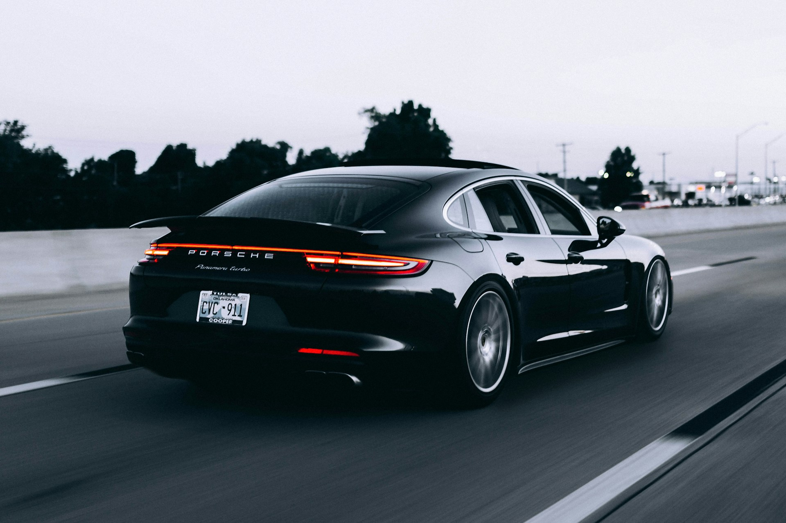
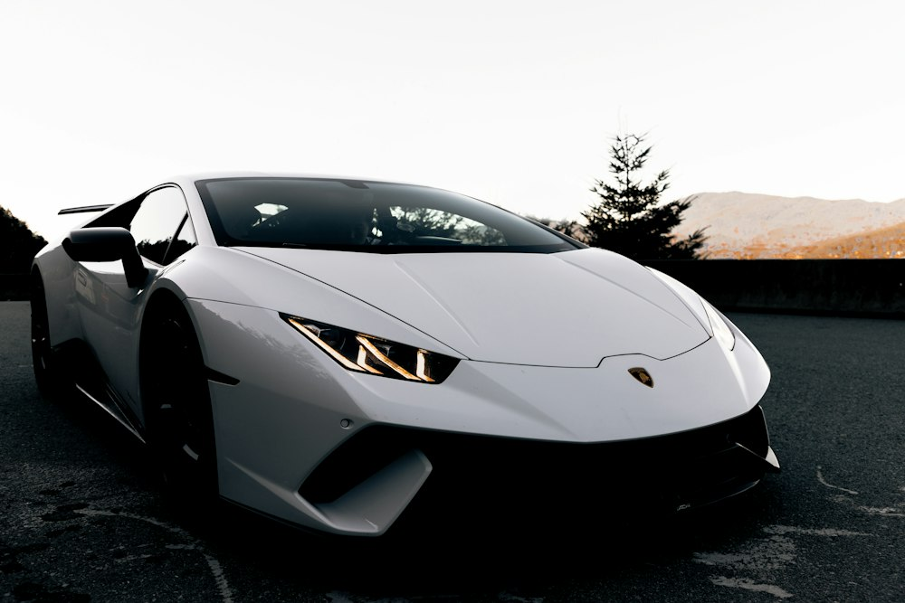
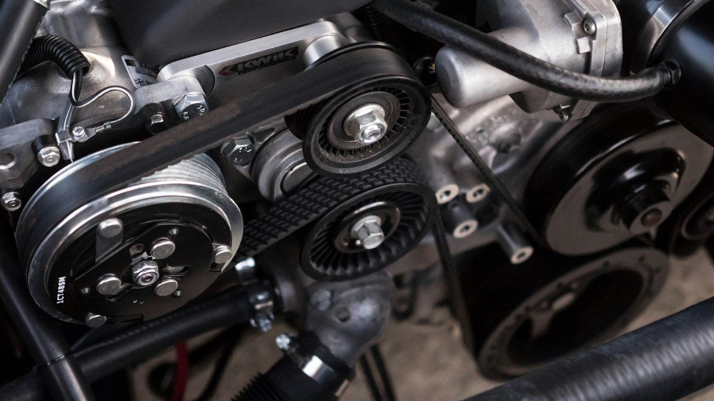

01
Vulkanizerstvo
Potrebujete vulkanizersko storitev? O ustrezni izvedbi in prostem terminu se dogovorite po telefonu.
Povprašajte za termin
VULKANIZERSTVO KOLA · PTUJ
Vsaka pot se začne pri stiku s cesto.
Pnevmatike in vulkanizerske storitve na Ptuju.
01 / STORITVE
Za podrobnosti ponudbe in dogovor za obisk se obrnite neposredno na podjetje.
Potrebujete vulkanizersko storitev? O ustrezni izvedbi in prostem terminu se dogovorite po telefonu.
Povprašajte za terminZa informacije o pnevmatikah, dimenzijah in razpoložljivosti obiščite obstoječo spletno stran ali pokličite.
Več o pnevmatikahPreverite ponudbo in se dogovorite za obisk.
051 631 788
ILUSTRATIVNA FOTOGRAFIJA02 / PNEVMATIKE
Prava pnevmatika je prilagojena vozilu, sezoni in načinu vožnje. O ponudbi in razpoložljivosti povprašajte neposredno pri podjetju KOLA.
Obstoječa spletna stran Zunanja povezava · razpoložljivost strani se lahko spreminja.03 / O PODJETJU
Vulkanizerstvo KOLA najdete na Ormoški cesti 81a na Ptuju.
Za informacije o vulkanizerskih storitvah, pnevmatikah in možnostih obiska uporabite spodnje kontaktne podatke.
Poiščite nasOblikovalski predlog. To je neuradna demonstracija, ki ni povezana s podjetjem KOLA. Vsebino je treba pred uradno uporabo potrditi s podjetjem.
04 / GALERIJA NAVDIHA
Ilustrativne fotografije. Ne prikazujejo prostorov, zaposlenih ali opravljenih storitev podjetja KOLA.

Fotografije: Unsplash · licenca za uporabo. Vse fotografije so ilustrativne.
05 / KONTAKT